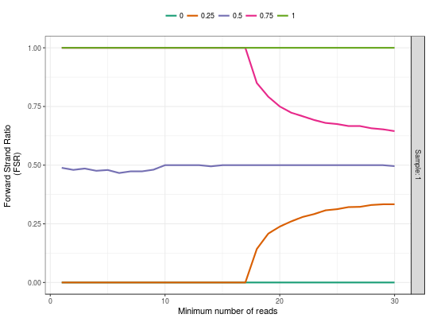

FSRDistplot returns a ggplot object with the Forward
Strand Ratio distribution plot to analyze strand imbalance in
ChIP-exo data.
FSRDistplot(..., names.input = NULL, quantiles = c(0, 0.25, 0.5, 0.75, 1), depth.values = seq_len(30), both.strand = FALSE)
list of ExoData objects, or several
ExoData objects by themselves.FSRDistplot is going to create the names
as the names of the list when they are available or is going to
name them as Sample: 1 ,... , Sample: k.c(0,.25,.5,.75,1))seq_len(50).DataFrame
contains only regions with reads aligned to both strand or all. The default
value is FALSE.A ggplot2 object with the FSR distribution plot.
data(exoExample) FSRDistplot(exoExample)